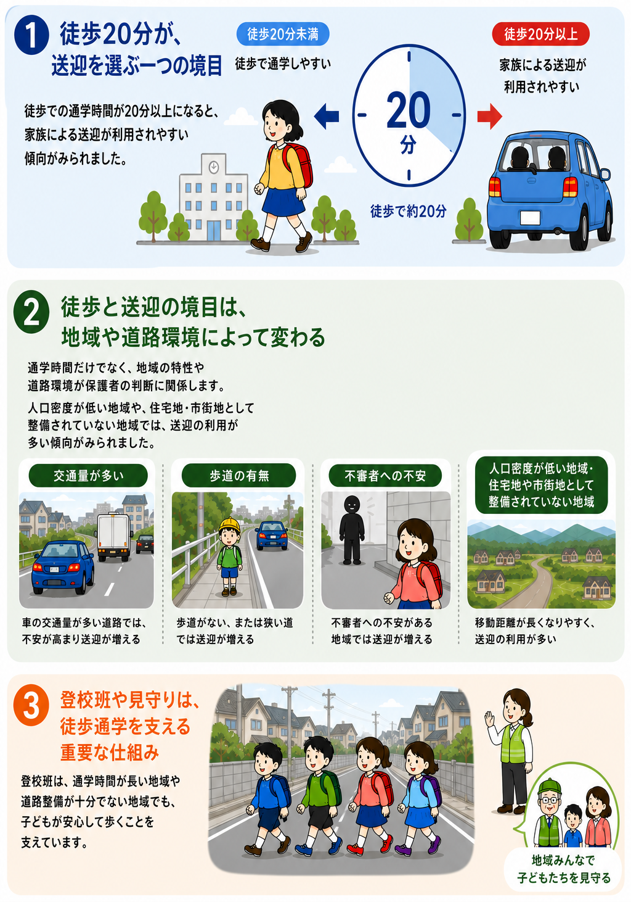

徒歩通学と送迎に関する分析
こどもの通学の徒歩と送迎の境目はどこ？
小学生の通学では、通学距離の長期化や交通事故・犯罪への不安を背景に、家族による送迎やスクールバスの利用が広がっています。一方、徒歩通学は、身体活動の確保だけでなく、友だちや地域の人との交流、自立性を育む大切な日常経験でもあります。本稿では、全国調査の結果から、徒歩通学時間、地域環境、登校班、安全上のリスクと送迎行動との関係を整理し、子どもが歩いて通える範囲と、送迎が選ばれやすくなる「境目」はどこにあるのかを考えます。

なぜ送迎が増えているのか、その影響は？
少子化に伴う小学校の統廃合によって、通学距離や通学時間が長くなる地域が増えています。また、交通量の多い道路や歩道のない通学路、交通事故、不審者などに対する保護者の不安も、家族による送迎が選ばれる背景となっています。さらに、公共交通やスクールバスを利用しにくい地域では、家族の車や自転車による送迎が、徒歩に代わる現実的な通学手段となります。送迎の増加は、家庭の都合だけでなく、学校配置の変化、通学路の安全性、地域の交通環境など、複数の条件が重なって生じていると考えられます。
全国の保護者に通学の実態を尋ねる
全国の公立小学校に通う子どもと暮らす20～50歳の女性を対象に、Webアンケート調査を行いました。2023年10月31日から11月14日までに6,000人から回答を集め、条件に合う5,611人を分析対象としました。アンケートでは、子どもの学年や徒歩で通学した場合の時間、過去1か月に家族の車や自転車で送迎した日数などを尋ねました。さらに、居住地域、通学路の歩きやすさ、近隣住民との関係、見守り活動や登校班の有無なども把握し、どのような条件で徒歩以外の通学手段が選ばれやすくなるのかを分析しました。
徒歩と送迎の境目はどこ？何が影響している？
全国調査の結果から、徒歩での通学時間が20分以上になると、家族の車や自転車による送迎が利用されやすくなる傾向が確認されました。徒歩20分は、子どもや保護者が通学手段を考える際の、一つの目安になっていると考えられます。実際に、徒歩以外の通学手段のなかでは、スクールバスや公共交通よりも家族による送迎が多く利用されていました。また、低学年の子どもや、保護者がフルタイムで働いている家庭でも、送迎が行われやすい傾向がみられました。
ただし、「20分を超えたら必ず送迎になる」ということではありません。徒歩と送迎の境目は、地域や道路の条件によって変わります。人口密度が低い地域や、住宅地・市街地として整備されていない地域では、送迎の利用が多い傾向がみられました。こうした地域では、学校までの距離が長いだけでなく、途中に立ち寄れる場所や人通りが少ないこと、利用できる公共交通が限られていることなどが、保護者の判断に影響している可能性があります。また、気温などの気象条件も、徒歩通学のしやすさと関係していました。
道路の安全性や地域への安心感も重要です。近所を走る車の速度が速いと感じている場合や、近所の人を信頼しにくいと感じている場合には、送迎が行われやすい傾向がありました。一方で、「近所の人が子どもを見守ってくれている」と感じている場合には、送迎が少ない傾向が確認されています。同じ20分の通学でも、歩道があり、車の速度が抑えられ、人の目が届く道と、子どもだけで歩かせることに不安を感じる道とでは、保護者の選択は異なります。つまり、時間だけでなく、その20分をどのような環境のなかで歩くのかが重要です。
こうしたなかで、登校班や地域住民による見守りは、徒歩通学を支える仕組みとなります。登校班は、通学時間が長い地域、人口密度が低い地域、歩道や街灯などの整備に対する評価が低い地域で導入されやすく、近隣住民同士の関係や見守り活動とも結びついていました。また、登校班のある地域では、交通事故や不審者に関するリスク遭遇経験がない割合が高く、特に地方部でその関連がみられました。ただし、これは登校班が事故や犯罪を必ず防ぐことを直接証明したものではなく、安全な徒歩通学を支える地域の仕組みとの関連を示した結果です。
実践への示唆：通学で子供が歩く機会を確保するために
徒歩通学を支えるためには、単に「何分まで歩かせるか」を決めるのではなく、子どもが安心して歩ける通学環境を整えることが重要です。特に、交通量が多い道路や車の速度が高い区間、歩道がない場所、見通しの悪い交差点などを把握し、歩道の整備、横断歩道や防護柵の設置、車の速度抑制、路面表示の改善といった対策を優先的に進める必要があります。街灯の設置や樹木・塀による死角の改善など、防犯面からの環境整備も欠かせません。
また、人口密度の低い地域や学校統廃合によって通学時間が長くなった地域では、徒歩だけにこだわらず、スクールバスや家族による送迎と徒歩を組み合わせる方法も考えられます。例えば、学校の近くや安全な場所に乗降地点を設け、そこから登校班で歩くことで、長距離移動の負担を減らしながら、子どもが歩く機会を確保できます。